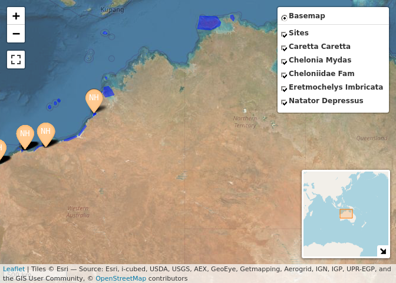

The WA Strandings Database WAStD (github) provides a RESTful API. WAStD contains data about turtle strandings, turtle taggings, turtle track and nest encounters, and some ancillary data (areas, surveys, staff). WAStD is accessible to authenticated staff of the WA Department of Biodiversity, Conservation and Attractions. The WAStD API uses token and basic authentication, see vignette on details.
The API returns spatially explicit data as GeoJSON, which can be loaded directly into any standard-compliant GIS environments, e.g. Quantum GIS.
If the data consumer however wishes to analyse data in a statistical package like R, the data need to be transformed from a nested list of lists (GeoJSON properties) into a two-dimensional tablular structure. This requires knowledge about the structure and content of the nested data from WAStD.
The main purpose of wastdr is to facilitate reading, parsing and using WAStD data by providing helpers to access the API and flatten the API outputs into a tidy dplyr::tibble.
The secondary purpose of wastdr is to centralize a collection of commonly used analyses and visualisations of turtle data. As development progresses, example analyses and visualisations will be added to the vignette. Contributions and requests are welcome!
Lastly, to facilitate collaboration with external stakeholders, wastdr contains some anonymized example data (raw GeoJSON and parsed tibble) of turtle taggings, turtle track counts, and turtle nests.
Installation
Install wastdr from GitHub:
# install.packages("devtools")
remotes::install_github(
"dbca-wa/wastdr",
dependencies = TRUE,
upgrade = "always",
build_vignettes = TRUE
)While the WAStD API is only accessible to a selected audience, and wastdr is under active development, it is not feasible to release wastdr on CRAN yet. Therefore, wastdr will be distributed via GitHub for the time being.
Setup
wastdr requires to be configured with the WAStD API URL and an access token or a username / password combination. wastdr functions expect these settings to be available as environment variables. For convenience, wastdr_setup sets the correct variables, while wastdr_settings retrieves the currently set values.
DBCA staff can find their WAStD API Token at WAStD under “My Profile” and add to their .Renviron. To use ODK Central turtle data download helpers, also add ODK Central credentials.
WASTDR_API_URL="https://tsc.dbca.wa.gov.au/api/1/"
WASTDR_API_TOKEN="Token XXX"
WASTDR_VERBOSE=TRUE
ODKC_URL="https://odkcentral.dbca.wa.gov.au"
ODKC_UN="..."
ODKC_PW="..."External collaborators can use their allocated WAStD username and password:
WASTDR_API_URL="https://tsc.dbca.wa.gov.au/api/1/"
WASTDR_API_UN="..."
WASTDR_API_PW="..."
WASTDR_VERBOSE=TRUE
ODKC_URL="https://odkcentral.dbca.wa.gov.au"
ODKC_UN="..."
ODKC_PW="..."Review the settings with:
wastdr::wastdr_settings()
#> <wastdr settings>
#> WAStD URL: https://tsc.dbca.wa.gov.au
#> API URL: https://tsc.dbca.wa.gov.au/api/1/
#> API Token: see wastdr::get_wastdr_api_token()
#> API Username: FlorianM
#> API Password: see wastdr::get_wastdr_api_pw()
#> Verbose: TRUEFor other configuration methods please see the vignette “Setup”.
Get WAStD
Once set up, wastdr can load data from WAStD simply with:
tracks <- "turtle-nest-encounters" %>%
wastd_GET(max_records = 10) %>%
parse_turtle_nest_encounters()Valid endpoints are listed in the base API URL of WAStD, e.g.:
encountersanimal-encountersturtle-nest-encountersturte-nest-disturbance-observations
…or have a pickle
If you don’t have access to the WAStD API, you can still get a feel for the data by using the pickled example data:
library(wastdr)
data("wastd_data")
data("odkc_data")
wastd_data$animals
#> # A tibble: 10 x 43
#> area_name area_type area_id site_name site_type site_id survey_id
#> <chr> <chr> <int> <chr> <chr> <int> <int>
#> 1 Barrow I… Locality 41 <NA> <NA> NA NA
#> 2 Barrow I… Locality 41 <NA> <NA> NA NA
#> 3 Mundabul… Site 42 <NA> <NA> NA NA
#> 4 Mundabul… Site 42 <NA> <NA> NA NA
#> 5 Mundabul… Site 42 <NA> <NA> NA NA
#> 6 Barrow I… Locality 41 <NA> <NA> NA NA
#> 7 Barrow I… Locality 41 <NA> <NA> NA NA
#> 8 Barrow I… Locality 41 <NA> <NA> NA NA
#> 9 Barrow I… Locality 41 <NA> <NA> NA NA
#> 10 Mundabul… Site 42 <NA> <NA> NA NA
#> # … with 36 more variables: survey_start_time <dttm>, survey_end_time <dttm>,
#> # survey_start_comments <chr>, survey_end_comments <chr>, datetime <dttm>,
#> # calendar_date_awst <chr>, turtle_date <date>, season <dbl>,
#> # season_week <dbl>, iso_week <dbl>, longitude <dbl>, latitude <dbl>,
#> # crs <chr>, location_accuracy <dbl>, taxon <chr>, name <chr>, species <chr>,
#> # health <chr>, sex <chr>, maturity <chr>, habitat <chr>, activity <chr>,
#> # nesting_event <chr>, checked_for_injuries <chr>,
#> # scanned_for_pit_tags <chr>, checked_for_flipper_tags <chr>,
#> # cause_of_death <chr>, cause_of_death_confidence <chr>,
#> # absolute_admin_url <chr>, obs <list>, source <chr>, source_id <chr>,
#> # encounter_type <chr>, status <chr>, observer <chr>, reporter <chr>
wastd_data$tracks
#> # A tibble: 10 x 43
#> area_name area_type area_id site_name site_type site_id survey_id
#> <chr> <chr> <int> <chr> <chr> <int> <int>
#> 1 Port Hed… Locality 13 Port Hed… Site 35 4562
#> 2 Port Hed… Locality 13 Port Hed… Site 35 4562
#> 3 Port Hed… Locality 13 Port Hed… Site 35 4562
#> 4 <NA> <NA> NA <NA> <NA> NA NA
#> 5 Perth Me… Locality 18 Florian … Site 53 3635
#> 6 Perth Me… Locality 18 Florian … Site 53 3635
#> 7 Perth Me… Locality 18 Kensingt… Site 33 3634
#> 8 Perth Me… Locality 18 Kensingt… Site 33 3634
#> 9 Perth Me… Locality 18 Kensingt… Site 33 3634
#> 10 Perth Me… Locality 18 Kensingt… Site 33 3634
#> # … with 36 more variables: survey_start_time <dttm>, survey_end_time <dttm>,
#> # survey_start_comments <chr>, survey_end_comments <chr>, datetime <dttm>,
#> # calendar_date_awst <chr>, turtle_date <date>, season <dbl>,
#> # season_week <dbl>, iso_week <dbl>, longitude <dbl>, latitude <dbl>,
#> # crs <chr>, location_accuracy <int>, species <chr>, nest_age <chr>,
#> # nest_type <chr>, name <chr>, habitat <chr>, disturbance <chr>,
#> # comments <chr>, absolute_admin_url <chr>, obs <list>, photos <list>,
#> # hatching_success <dbl>, emergence_success <dbl>, clutch_size <dbl>,
#> # clutch_size_fresh <dbl>, source <chr>, source_id <chr>,
#> # encounter_type <chr>, status <chr>, observer <chr>, reporter <chr>,
#> # species_colours <chr>, nest_type_text <chr>
wastd_data$tracks %>% map_tracks(sites = wastd_data$sites)
odkc_data$tracks %>% map_tracks_odkc(sites = odkc_data$sites)
Contribute
Every contribution, constructive feedback, or suggestion is welcome!
Send us your ideas and requests as issues or submit a pull request.
Pull requests should eventually pass tests and checks (not introducing new ERRORs, WARNINGs or NOTEs apart from the “New CRAN package” NOTE):
styler:::style_pkg()
spelling::spell_check_package()
spelling::update_wordlist()
devtools::document(roclets = c("rd", "collate", "namespace", "vignette"))
devtools::build()
devtools::test()
# devtools::check(force_suggests = T, args = c("--as-cran", "--timings"))
goodpractice::goodpractice(quiet = F)
covr::codecov(token = Sys.getenv("CODECOV_TOKEN"))To enable local testing of the API as well as checking and upload of test coverage, add your CODECOV token to your .Renviron:
The wastdr webpage is hosted on gh-pages and generated using pkgdown.